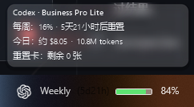
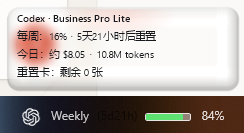

◔
任务栏实时额度
将剩余额度、余额与重置时间固定在视线边缘，持续更新但不打扰。
额度常驻任务栏，鼠标悬停立即展开完整明细。跟随 Windows 主题切换，不额外占用工作空间。


以上为 v1.10.4 实际运行截图，敏感账号信息已做模糊处理。
将剩余额度、余额与重置时间固定在视线边缘，持续更新但不打扰。
无需点击即可展开更完整的额度、Token 与费用信息。
把多个 AI 服务的状态集中到一个清晰视图中。
回看使用趋势与成本记录，更从容地规划下一次高强度工作。
在额度偏低或即将重置时获得及时提醒。
应用在本地运行，不依赖我们的云端，也不采集遥测。
连接你已经在使用的 AI 编程与通用助手服务。
AIQuotaRelay 在本地读取和呈现你的额度信息。我们不运营用于收集这些数据的自建云服务，也不植入遥测或跟踪脚本。
下载 ZIP 到本地，解压到你希望长期保留的文件夹。
右键 Install.ps1，选择“使用 PowerShell 运行”。脚本会安装程序、创建桌面快捷方式并自动启动。
在本地完成所需平台配置，额度状态随后显示在任务栏。
适用于 Windows 10 2004+ x64；推荐 Windows 11 以获得更完整的视觉体验。
SHA-256：4434E5A92342923F077676F4A701AC4A521166985DE60795C6650BE7E17891C3关于 Windows 安全提示
此版本未签名，Windows 可能显示“未知发布者”。请确认下载地址后，点击“更多信息”→“仍要运行”。本站不会声称该程序已签名。
不会。应用在本地运行，不使用我们的云端中转，也不包含遥测。各服务的连接仍受其自身条款与接口约束。
支持 Windows 10 2004 及以上版本的 x64 设备，推荐使用 Windows 11。
当前安装包未使用受信任的代码签名证书。确认文件来自本页列出的 GitHub Releases 地址后，可点击“更多信息”→“仍要运行”。
本项目保留 MIT 许可与原作者署名。AIQuotaRelay 基于 Zied Kallel 的 TaskbarQuota，详情见 LICENSE 与 NOTICE。
不需要。日常状态可直接在任务栏查看，需要深入分析时再打开 Dashboard。